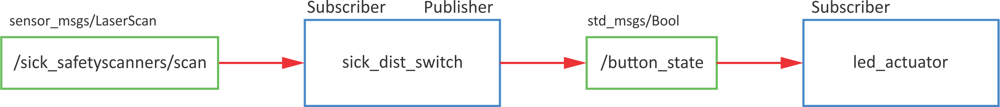

#!/usr/bin/env pythonimportrospyif__name__=='__main__':rospy.init_node('my_first_python_node')rospy.loginfo('This node has been started.')rospy.sleep(1)print('Exit now')
Only one node with specific name can be run at a time. If you want to run more instances of the same node, change:
#!/usr/bin/env pythonimportrospyclasshello_world():def__init__(self):# init variablesself.delay=5self.ctrl_c=Falserospy.on_shutdown(self.shutdownhook)defshutdownhook(self):# works better than the rospy.is_shutdown()# this code is run at ctrl + crospy.loginfo('This node has been terminated.')self.ctrl_c=Truedeftest_node(self):rospy.loginfo('This node has been started.')rospy.sleep(self.delay)print('Exit now')if__name__=='__main__':# initialise noderospy.init_node('my_first_python_node')# initialise classfirst_node=hello_world()try:first_node.test_node()exceptrospy.ROSInterruptException:pass
DEBUG
rosrun <pkg name> <node name> - run specific node
rosnode list - list of all active nodes
rosnode info <node name> - information about hte node
rosnode kill <node name> - shut down node
rosnode ping <node name> - ping node (check, if it is working)
Topics
Topic is:
a communication channel through which nodes exchange messages
#!/usr/bin/env pythonimportrospyimportRPi.GPIOasGPIOfromstd_msgs.msgimportBool# buttons GPIO pins # button 1 - gpio 11# button 2 - gpio 12classrpi_button():def__init__(self):# init variablesself.BUTTON_GPIO=11# set GPIO kot BCMGPIO.setmode(GPIO.BCM)# set button IO as inputGPIO.setup(self.BUTTON_GPIO,GPIO.IN)# set loop frequency to 10 Hzself.rate=rospy.Rate(10)# define publisher# rospy.Publisher("topic_name", varType, queue_size)self.pub=rospy.Publisher('/button_state',Bool,queue_size=10)self.ctrl_c=Falserospy.on_shutdown(self.shutdownhook)defread_button(self):whilenotself.ctrl_c:# read GPIO pingpio_state=GPIO.input(self.BUTTON_GPIO)# define msg as Bool variableself.msg=Bool()# msg has a data "data"self.msg.data=gpio_state# send msgself.publish_once()defpublish_once(self):""" This is because publishing in topics sometimes fails the first time you publish. In continuous publishing systems, this is no big deal, but in systems that publish only once, it IS very important. """whilenotself.ctrl_c:connections=self.pub.get_num_connections()ifconnections>0:self.pub.publish(self.msg)#rospy.loginfo("Msg Published")breakelse:self.rate.sleep()defshutdownhook(self):# works better than the rospy.is_shutdown()# this code is run at ctrl + c# clear all GPIO settingsGPIO.cleanup()self.ctrl_c=Trueif__name__=='__main__':# initialise noderospy.init_node('button_state_publisher',anonymous=True)# initialise classbtn=rpi_button()try:btn.read_button()exceptrospy.ROSInterruptException:pass
#!/usr/bin/env pythonimportrospyfromstd_msgs.msgimportBoolimportRPi.GPIOasGPIO# GPIO za LED:# Green 1 - GPIO 2# Green 2 - GPIO 3# Yellow 1 - GPIO 4# Yellow 2 - GPIO 5# Red 1 - GPIO 6# Red 2 - GPIO 7classrpi_led():def__init__(self):# init variablesself.LED_GPIO=7# set GPIO kot BCMGPIO.setmode(GPIO.BCM)# set all ledsforiiinrange(2,8):# set IO as outputsGPIO.setup(ii,GPIO.OUT)# define subscriber# rospy.Subscriber('topic_name', varType, callback)self.sub=rospy.Subscriber('/button_state',Bool,self.button_state_callback)self.ctrl_c=Falserospy.on_shutdown(self.shutdownhook)defbutton_state_callback(self,msg):# the code that is executed when data is received# turn on LEDGPIO.output(self.LED_GPIO,msg.data)defresetLed(self):# reset all ledsforiiinrange(2,8):# turn off all ledsGPIO.output(ii,False)defshutdownhook(self):# works better than the rospy.is_shutdown()# this code is run at ctrl + c# clear all settingsGPIO.cleanup()self.ctrl_c=Trueif__name__=='__main__':# initialise noderospy.init_node('led_actuator')# initialise classled_act=rpi_led()# reset ledsled_act.resetLed()try:# looprospy.spin()exceptrospy.ROSInterruptException:pass
To test the code run
rosrun rpi_feros led_actuator.py
After that check topics (loook for /button_state):
To test both (publisher and subscriber), run each in the invidual terminal:
rosrun rpi_feros button_publisher.py
and
rosrun rpi_feros led_actuator.py
When pressing the button on RPi, the LED should turn on.
DEBUG
rostopic -h - rostopic help
rostopic list - list of all active topics
rostopic echo <topic name> - listen to selected topic
-c - clear output each time
-n2 - print only 2 outputs
rostopic info <topic name> - information about topic
rostopic pub <topic name> + Tab for autocomplete - publish data
-1 - publish only once
-r5- publish with 5 Hz
Exercise
Turn on LED if the object is closer than 0.2 m.

roslaunch
Roslaunch is a tool for easily launching multiple ROS nodes as well as setting parameters. Roslaunch takes in one or more XML configuration files (with the .launch extension) that specify the parameters to set and nodes to launch, as well as the machines that they should be run on.
#!/usr/bin/env pythonimportrospyfromstd_srvs.srvimportSetBoolimportRPi.GPIOasGPIOclassledServer():def__init__(self):# init variablesself.LED_GPIO=2# set GPIO kot BCMGPIO.setmode(GPIO.BCM)# set all ledsforiiinrange(2,8):# set IO as outputsGPIO.setup(ii,GPIO.OUT)# define service# rospy.Service('service_name',varType,callback)rospy.Service('/set_led_state',SetBool,self.set_led_status_callback)rospy.loginfo("Service server started. Ready to get request.")self.ctrl_c=Falserospy.on_shutdown(self.shutdownhook)defset_led_status_callback(self,req):# code that is executed when request is received# set LED to req.dataGPIO.output(self.LED_GPIO,req.data)# server responsereturn{'success':True,'message':'Successfully changed LED state.'}defresetLed(self):# reset all ledsforiiinrange(2,8):# turn off all ledsGPIO.output(ii,False)defshutdownhook(self):# works better than the rospy.is_shutdown()# this code is run at ctrl + c# clear all settingsGPIO.cleanup()self.ctrl_c=Trueif__name__=='__main__':# initialise noderospy.init_node('led_actuator')# initialise classled_server=ledServer()# reset ledsled_server.resetLed()try:# looprospy.spin()exceptrospy.ROSInterruptException:pass
To test the code run
rosrun rpi_feros led_service_server.py
and check the list of services (look for /set_led_state)
#!/usr/bin/env pythonimportrospyfromstd_srvs.srvimportSetBoolimportRPi.GPIOasGPIOclassbuttonClient():def__init__(self):# init variablesself.BUTTON_GPIO=11self.LED_STATE=False# set GPIO kot BCMGPIO.setmode(GPIO.BCM)# set button GPIO as inputGPIO.setup(self.BUTTON_GPIO,GPIO.IN)# set interrupt# GPIO.add_event_detect(gpio_num, edge, callback, bouncetime)GPIO.add_event_detect(self.BUTTON_GPIO,GPIO.RISING,callback=self.button_callback,bouncetime=500)# define service proxy# rospy.ServiceProxy('service_name', varType)# wait for servicerospy.wait_for_service('/set_led_state')# define proxy self.set_led_state=rospy.ServiceProxy('/set_led_state',SetBool)self.ctrl_c=Falserospy.on_shutdown(self.shutdownhook)defbutton_callback(self,channel):# code that is called from interrupt# get the button statepower_on_led=GPIO.input(self.BUTTON_GPIO)# change LED stateself.LED_STATE=notself.LED_STATEtry:# send request, get responseresp=self.set_led_state(self.LED_STATE)# print responseprint(resp)exceptrospy.ServiceExceptionase:# in case of errorrospy.logwarn(e)defshutdownhook(self):# works better than the rospy.is_shutdown()# this code is run at ctrl + c# clear all settingsGPIO.cleanup()self.ctrl_c=Trueif__name__=='__main__':# initialise noderospy.init_node('button_monitor')# initialise classbutton_client=buttonClient()try:# looprospy.spin()exceptrospy.ROSInterruptException:pass
To test, run both server and client in seperate terminals
# Generate services in the 'srv' folder
add_service_files(
FILES
safetyZone.srv
)
After that do the catkin_make
roscd
cd ..
catkin_make
After the build is finish you can check if the service message rpi_msgs/safetyZone is available
rossrv list |grep rpi
Use of custom MSG and SRV
To use custom messages, you need to do some changes of the package.html and the CMakeLists.txt of the package where you want to use them (in our case rpi_feros)
#!/usr/bin/env pythonimportrospyimportRPi.GPIOasGPIO# include actionlibimportactionlib# include action msgsfromrpi_msgs.msgimportrunningLedFeedback,runningLedResult,runningLedActionclassrunled_server():def__init__(self):# init variables# set GPIO kot BCMGPIO.setmode(GPIO.BCM)# set all ledsforiiinrange(2,8):# set IO as outputsGPIO.setup(ii,GPIO.OUT)# define simple action server# actionlib.SimpleActionServer('action_name', actionType, callback, autostart)self.ACserver=actionlib.SimpleActionServer('run_led',runningLedAction,self.goal_callback,False)# run serverself.ACserver.start()print('Server pripravljen')# define loop frequency (6 Hz)self.r=rospy.Rate(6)self.ctrl_c=Falserospy.on_shutdown(self.shutdownhook)defgoal_callback(self,goal):# Do lots of awesome groundbreaking robot stuff hereself.resetLed()# print number of iterations print("Stevilo iteracij: %i"%goal.numberOfRuns)# define feedback variablefeedback1=runningLedFeedback()# define result variableresult1=runningLedResult()success=TruedoPreemt=False# do number of iterationsforkkinrange(1,goal.numberOfRuns+1):# turn on individual LED (GPIO 2 - GPIO 7)foriiinrange(2,8):# check if there was a preemt requestifself.ACserver.is_preempt_requested():# skip other interationsprint('Goal preempted.')# definie resultresult1.finalRun=kk# in case of preemt send result and textself.ACserver.set_preempted(result=result1,text='Goal preemted.')success=FalsedoPreemt=True# break inside loop - turning on individual LEDsbreak################################ ACTIONS# clear all LEDself.resetLed()# turn on LED iGPIO.output(ii,True)# 6 Hzself.r.sleep()############################### # in case of preemt, break outside loop - iterationsifdoPreemt:break# send feedback after each interationfeedback1.currentRun=kkself.ACserver.publish_feedback(feedback1)# send result after all iterationsifsuccess:# define resultsresult1.finalRun=feedback1.currentRun# logrospy.loginfo('Zakljuceno - Succeeded')# poslji rezultatself.ACserver.set_succeeded(result1)defresetLed(self):# reset all ledsforiiinrange(2,8):# turn off all ledsGPIO.output(ii,False)defshutdownhook(self):# works better than the rospy.is_shutdown()# this code is run at ctrl + c# clear all settingsGPIO.cleanup()self.ctrl_c=Trueif__name__=='__main__':# initialise noderospy.init_node('runled_server')# initialise classrunled=runled_server()# reset ledsrunled.resetLed()try:# looprospy.spin()exceptrospy.ROSInterruptException:pass
client=actionlib.SimpleActionClient('name',actionSpec)client.send_goal(goal)# Sends the goal to the action server.client.wait_for_result()# Waits for the server to finish performing the action.client.get_result()# Prints out the result of executing the actionclient.get_state()# Get current state of the server# define action server statusPENDING=0ACTIVE=1DONE=2WARN=3ERROR=4
#!/usr/bin/env pythonimportrospy# import actionlibimportactionlib# import action msgsfromrpi_msgs.msgimportrunningLedAction,runningLedGoal,runningLedResult# define action server statusPENDING=0ACTIVE=1DONE=2WARN=3ERROR=4classrunled_client():def__init__(self):# define simple action client # actionlib.SimpleActionClient('action:name', actionType)self.client=actionlib.SimpleActionClient('run_led',runningLedAction)# wait, until server isnt activeself.client.wait_for_server()rospy.loginfo("Server is active.")self.ctrl_c=Falserospy.on_shutdown(self.shutdownhook)defrun_led_client(self,goalNum):# define goalgoal=runningLedGoal()goal.numberOfRuns=goalNum# send goal self.client.send_goal(goal)''' ################################### # FOR PREEMT TESTING # after 3 s send new goal rospy.sleep(3) goal.numberOfRuns = 2 self.client.send_goal(goal) print('New goal was sent.') ################################### '''# OPTION A - wait, until server doesn finish (similar to service)self.client.wait_for_result()''' # OPTION B - do something else while you are waiting ## read current server state current_state = self.client.get_state() ## define loop frequency 1 Hz r2 = rospy.Rate(1) # until server status isnt DONE, do something else while current_state < DONE: # action is running, so do somethin productive # check state current_state = self.client.get_state() # 1 Hz r2.sleep() # is the server state is WARN if current_state == WARN: rospy.logwarn("Warning on the action server side.") # if the server state is ERROR if current_state == ERROR: rospy.logerr("Error on the action server side.") '''# return resultreturnself.client.get_result()defshutdownhook(self):# works better than the rospy.is_shutdown()# this code is run at ctrl + cself.ctrl_c=Trueif__name__=='__main__':# initialise noderospy.init_node('run_led_client')# initialise classrunled=runled_client()try:# poslji goal result=runled.run_led_client(goalNum=10)# izpisi rezultatprint("Result: %i"%result.finalRun)exceptrospy.ROSInterruptException:# v primeru napakeprint("Program interrupted before completion.")
Exercise
Stop execution of LEDs sequential blinking if the object is closer that 20 cm.
Parameters
Parameter server: globally available dictionary within ROS master
ROS parameter: one variable within the parameter server
# set parameterrospy.set_param('/publish_frequency',2)# get parameterpublish_freq=rospy.get_param('/publish_frequency')# get list of parameterstry:rospy.get_param_names()exceptROSException:print("Could not get param names")